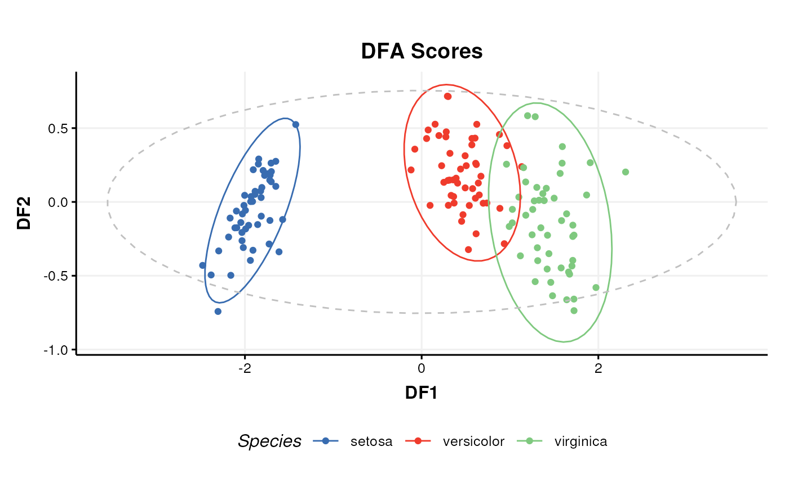

A scatter plot of the selected DFA components.
Arguments
- components
(numeric) The components selected for plotting. The default is
c(1, 2).- points_to_label
(character) Points to label. Allowed values are limited to the following:
"none": No samples labels are displayed."all": The labels for all samples are displayed."outliers": Labels for for potential outlier samples are displayed.
The default is
"none".- factor_name
(character) The name of a sample-meta column to use.
- ellipse
(character) Plot ellipses. Allowed values are limited to the following:
"all": Hotelling T2 ellipses (p=0.95) are plotted for all groups and all samples."group": Hotelling T2 ellipses (p=0.95) are plotted for all groups."none": Ellipses are not included on the plot."sample": A Hotelling T2 ellipse (p=0.95) is plotted for all samples (ignoring group).
The default is
"all".- label_filter
(character) Labels are only plotted for the named groups. If zero-length then all groups are included. The default is
character(0).- label_factor
(character) The column name of sample_meta to use for labelling samples on the plot. "rownames" will use the row names from sample_meta. The default is
"rownames".- label_size
(numeric) The text size of labels. Note this is not in Font Units. The default is
3.88.- ...
Additional slots and values passed to
struct_class.
Value
A
dfa_scores_plot
object. This object has no output slots.
See chart_plot in the struct package to plot this chart object.
Inheritance
A dfa_scores_plot object inherits the following struct classes: [dfa_scores_plot] >> [chart] >> [struct_class]
References
Wickham H, Pedersen T, Seidel D (2023). scales: Scale Functions for Visualization. R package version 1.3.0, https://CRAN.R-project.org/package=scales.
Wickham H (2016). ggplot2: Elegant Graphics for Data Analysis. Springer-Verlag New York. ISBN 978-3-319-24277-4, https://ggplot2.tidyverse.org.
Examples
M = dfa_scores_plot(
components = c(1, 2),
points_to_label = "none",
factor_name = "V1",
ellipse = "all",
label_filter = character(0),
label_factor = "rownames",
label_size = 3.88)
D = iris_DatasetExperiment()
M = mean_centre() + DFA(factor_name='Species')
M = model_apply(M,D)
C = dfa_scores_plot(factor_name = 'Species')
chart_plot(C,M[2])
#> Warning: The following aesthetics were dropped during statistical transformation: label
#> ℹ This can happen when ggplot fails to infer the correct grouping structure in
#> the data.
#> ℹ Did you forget to specify a `group` aesthetic or to convert a numerical
#> variable into a factor?
#> Warning: The following aesthetics were dropped during statistical transformation: label
#> ℹ This can happen when ggplot fails to infer the correct grouping structure in
#> the data.
#> ℹ Did you forget to specify a `group` aesthetic or to convert a numerical
#> variable into a factor?
#> Warning: The following aesthetics were dropped during statistical transformation: label
#> ℹ This can happen when ggplot fails to infer the correct grouping structure in
#> the data.
#> ℹ Did you forget to specify a `group` aesthetic or to convert a numerical
#> variable into a factor?
#> Warning: The following aesthetics were dropped during statistical transformation: label
#> ℹ This can happen when ggplot fails to infer the correct grouping structure in
#> the data.
#> ℹ Did you forget to specify a `group` aesthetic or to convert a numerical
#> variable into a factor?
